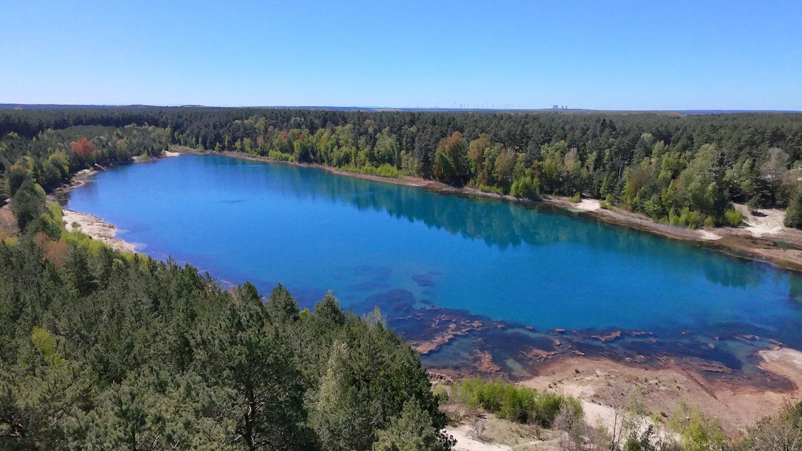
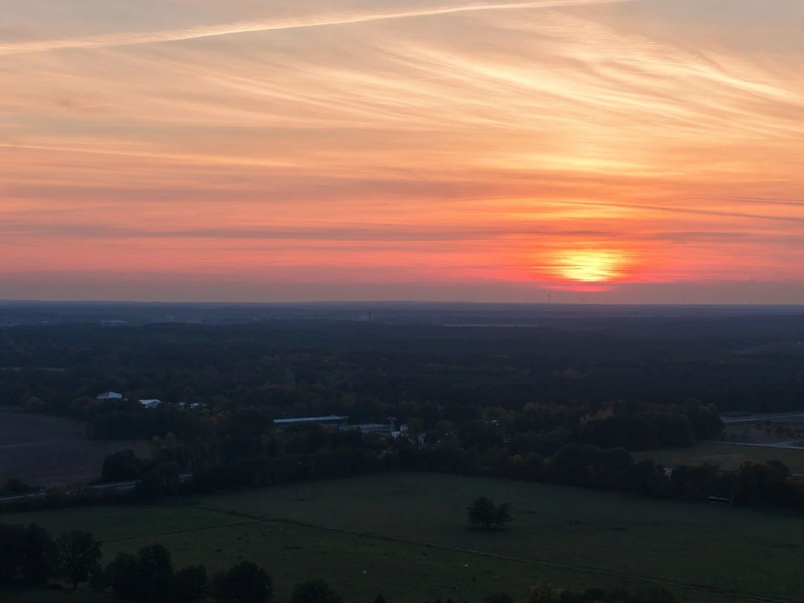
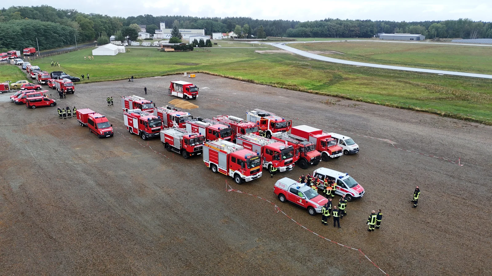
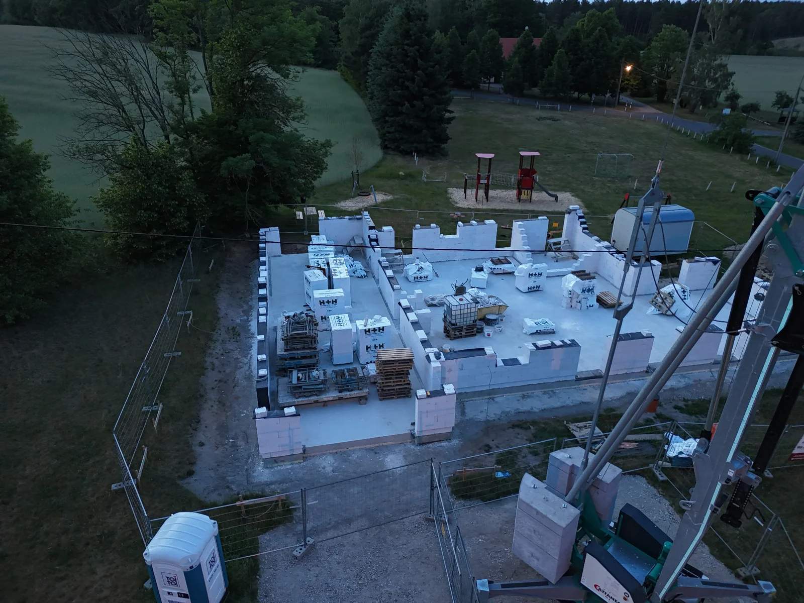
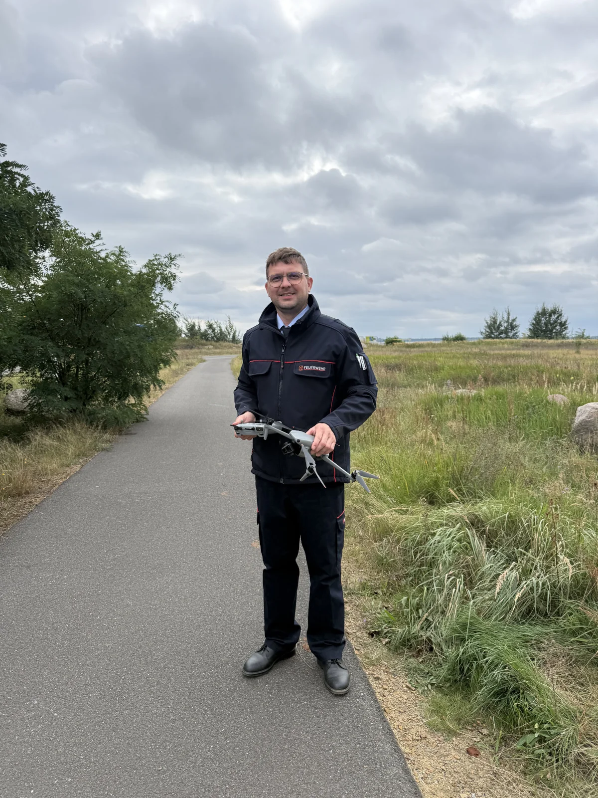
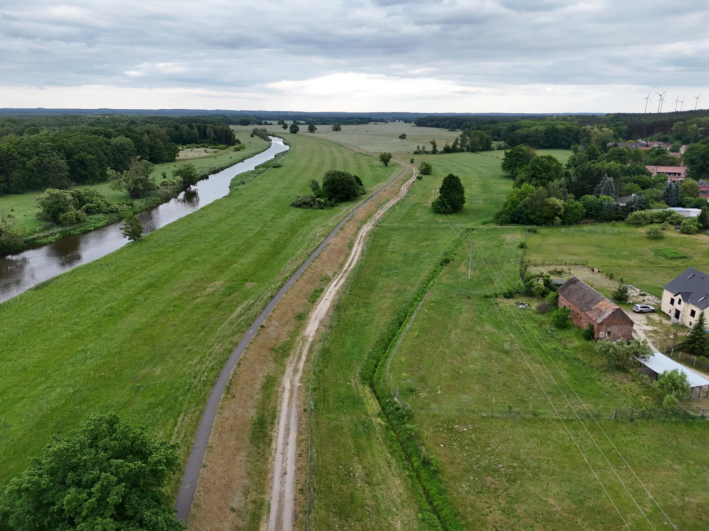

Perspektiven,
die bleiben.
Zeig deinen Ort von einer neuen Seite. Für Erinnerungen, die eigene Website oder einen Auftritt, der Aufmerksamkeit bekommt.
Dein Zuhause. Dein Projekt. Unsere Lausitz.
Ich halte fest, was vom Boden aus verborgen bleibt – in Fotos und Videos, die begeistern und dir neue Einblicke geben.
Persönlich mit Chris · Foto & Video auf USB-Stick · Regional unterwegs


Manchmal geht es um einen besonderen Moment. Manchmal um einen klaren Überblick. Und manchmal um eine Stelle, an die du selbst schwer herankommst.
Zeig deinen Ort von einer neuen Seite. Für Erinnerungen, die eigene Website oder einen Auftritt, der Aufmerksamkeit bekommt.
Gebäude, Grundstück und Umfeld werden gemeinsam sichtbar. Das hilft, Vorhaben zu erklären und nächste Schritte vorzubereiten.
Für reine Bildaufnahmen kann häufig ein zusätzlicher Aufstieg, ein Gerüst oder ein Hubsteiger entfallen. Dein Fachbetrieb erhält Bildmaterial zur weiteren Beurteilung.
Für private Herzensprojekte, regionale Unternehmen und alle, die einen anderen Blickwinkel brauchen.
Zeig, was deine Region oder Unterkunft besonders macht: das Wasser vor der Tür, die Weite der Landschaft und das Gefühl, hier anzukommen.
Entdecken ↗Ein Haus steht nie für sich allein. Aufnahmen aus der Luft zeigen Gebäude, Garten, Zufahrt und Umgebung im Zusammenhang – für die Präsentation oder als persönliche Erinnerung.
Entdecken ↗Euer Gelände, eure Fahrzeuge oder das Zusammenspiel im Team: Mit passenden Perspektiven wird aus einem Ablauf eine Geschichte, die im Kopf bleibt.
Entdecken ↗Dachflächen und schwer erreichbare Gebäudeteile vom Boden aus beurteilen zu wollen, hat Grenzen. Ich liefere dir und deinem Fachbetrieb Foto- und Videoaufnahmen der vereinbarten sichtbaren Bereiche.
Entdecken ↗Das eigene Zuhause, der Lieblingsplatz oder ein besonderes Vorhaben: Manche Orte bedeuten uns mehr. Aus der Vogelperspektive entstehen neue Erinnerungen an das Vertraute.
Entdecken ↗
Eine Übung der Brandschutzeinheit aus der Perspektive der Air 3.
Vom Sonnenuntergang bis zu den ersten Lichtern der Stadt.

Was die Vogelperspektive bei einer Dokumentation sichtbar macht.

Als gelernter IT-Systemelektroniker hat mich Technik schon immer begeistert. Über die Feuerwehr kam die Leidenschaft fürs Drohnenfliegen dazu.
Heute bin ich mehrmals pro Woche draußen, um den Kopf freizubekommen und die Lausitz von oben zu genießen. Diese Begeisterung steckt in jeder Aufnahme, die ich für dich mache.
Meine Geschichte kennenlernen ↗„Erst deine Idee verstehen.
Dann die richtige Perspektive finden.“
Du musst weder die passende Drohne kennen noch eine fertige Aufnahmeliste mitbringen. Wir besprechen, was du zeigen möchtest, und legen Umfang und Preis vorab fest.
So läuft dein Projekt ab ↗Mein Ausgangspunkt ist Döbern, 03159. Ich bin unter anderem in Forst (Lausitz), Weißwasser, Cottbus, Spremberg, Guben und Peitz unterwegs. Den konkreten Aufnahmeort und die Anfahrt stimmen wir vorher ab.

Ein Lieblingsort, dein Gebäude oder ein neues Projekt: Gemeinsam finden wir die Perspektive, die zu dir passt.